💡 多洛米蒂行前懶人包 💡 Dolomites Solo Travel Quick Info
章節導覽Table of Contents
🛑 多洛米蒂獨旅防雷與隱藏密技 🛑 Solo Travel Hacks & Hidden Tips
⛰️ 高山屋 (Rifugio) 預訂大戰Rifugio Booking War
若想體驗連續多日健行可以選擇山區內絕美的木屋旅館（Rifugio）。通常只在夏冬兩季營業。由於床位極少且極受歐洲健行客歡迎，熱門山屋往往需要提前三個月以上寫 Email 預訂！ If you want to experience multi-day hiking, stay at the stunning mountain huts (Rifugio). Open only in summer and winter. Because beds are scarce, popular huts require emailing at least 3 months in advance!
🚡 纜車票與交通卡選擇Cable Car Passes
纜車票極貴！住在南提洛邦的飯店常免費送 Südtirol Pass（免費搭公車、火車 + 部分纜車，不含 Seceda／三尖峰）。若打算瘋狂搭纜車健行，也可以考慮：Supersummer Card（不含 Seceda）、Gardena Card（集中在 Val Gardena 玩、要包 Seceda 時最划算）。 Cable cars are expensive! Hotels in South Tyrol often give free Südtirol Passes (free transit + some cable cars, Seceda/Tre Cime NOT included). If you plan to use many cable cars, consider the Supersummer Card (excludes Seceda) or the Gardena Card (best value if staying in Val Gardena).
🧗 免費欣賞刀鋒山絕景Free Seceda View
從 St. Christina 搭乘 358 公車至 Cristauta - parcheggio 開始登山。不含休息步行約 2.5 小時、總爬升約 870 公尺（無腦跟著 Google Map 走！），就能免費直達刀鋒山頂！ Take bus 358 from St. Christina to Cristauta and hike. About 2.5 hours walk (excl. breaks) with 870m elevation gain (just follow Google Maps!), and reach the top of Seceda for free!
🗺️ 必做體驗：多洛米蒂 12 大絕美景點 🗺️ Must-Do: 12 Beautiful Spots in Dolomites
多洛米蒂大約分為東西兩大區塊（以奧蒂塞伊 Ortisei 與科爾蒂納 Cortina 為兩大門戶）。以下整理出此生必訪的 12 大自然奇景： The Dolomites are roughly divided into East and West (with Ortisei and Cortina as the two main gateways). Here are the 12 natural wonders you must visit in your lifetime:
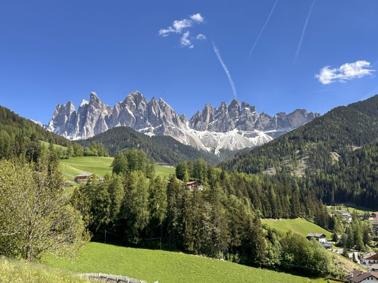
自然景觀 / 免費Nature / Free1. 富內斯山谷 (Val di Funes)1. Val di Funes
被譽為多洛米蒂「最美山谷」。背後是宏偉鋸齒狀的蓋斯勒群峰 (Odle Geisler)，前方則是如阿爾卑斯少女般的翠綠草坡與散落的木屋。 Hailed as the 'most beautiful valley' in the Dolomites. Backed by the majestic jagged Odle Geisler peaks, with lush green slopes and scattered wooden cabins resembling an Alpine maiden's home in the front.
💭 我的感受：💭 Bryan's take: 相較於南側的加迪納山谷，這裡的旅客明顯較少，還能享受清幽的絕景！ Compared to Val Gardena to the south, there are noticeably fewer tourists here, allowing you to enjoy the tranquil and stunning views!
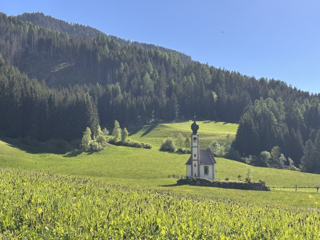
歷史建築 / 景觀Historic / View2. 聖約翰孤獨小教堂 (Chiesetta di San Giovanni in Ranui)2. St. John in Ranui Church
位於富內斯山谷內，這座洋蔥圓頂的洋蔥小教堂孤零零地矗立在草地上，背靠巨大的白雲岩山脈，是 Instagram 上最經典的多洛米蒂明信片視角。入場要€5，但在圍欄外面拍就很美很夠了～ Located in Val di Funes, this onion-domed church stands alone in a meadow backed by the massive Dolomites. The most classic Dolomites postcard view on Instagram. Entry is €5, but taking photos from outside the fence is beautiful and sufficient enough~
💭 我的感受：💭 Bryan's take: 下午的太陽撒在綠油油的成片草坪上、襯著背後橫亙拔高的山脈，把教堂的莊嚴孤獨凸顯地淋漓盡致。 The afternoon sun shines on the green lawns, backed by the towering mountains, perfectly highlighting the church's solemn solitude.
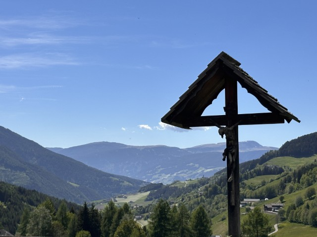
歷史建築 / 免費Historic / Free3. 聖瑪格達萊娜教堂 (Chiesa di Santa Maddalena)3. Church of Santa Maddalena
同樣位於富內斯山谷。沿著全景步道往上走，能將這座優雅的村落教堂與背後氣勢磅礴的蓋斯勒群峰完美同框，尤其日落時分的「日照金山」令人屏息。 Also in Val di Funes. Walking up the panoramic trail perfectly frames this elegant village church with the majestic Odle Geisler peaks behind it, especially the breathtaking 'Alpenglow' at sunset.
💭 我的感受：💭 Bryan's take: 位於山谷的另一側，很容易遙望刀鋒山的壯闊與谷地的絕景。 Located on the other side of the valley, offering an easy view of the majestic Seceda and the valley's spectacular scenery.
4. 刀鋒山 (Seceda)4. Seceda
從 Ortisei 搭乘兩段纜車即可輕鬆抵達。一側是平緩翠綠的草坡，另一側則是垂直陡峭的懸崖深淵，造就了如「刀峰」般極具戲劇張力的山脊線。山脊步道(Ridgeline)要€5，但可以從底下的其他步道免費繞過去！ Easily reached by two cable cars from Ortisei. One side is a gentle green slope, the other a vertical sheer cliff, creating a highly dramatic 'blade-like' ridgeline. The Ridgeline trail costs €5, but you can bypass it for free using other trails below!
💭 我的感受：💭 Bryan's take: 刀鋒山實在名不虛傳，如同神推倒的巨大骨牌層疊而上。山頂的其他角度也同樣波瀾壯闊、而在夏天草地還能舒服躺臥，一待就一個下午。 Seceda truly lives up to its name, cascading like giant dominoes pushed over by gods. Other angles at the peak are equally magnificent, and in summer you can comfortably lie on the grass for an entire afternoon.
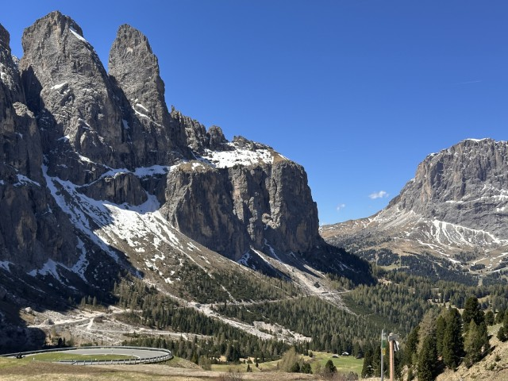
自然景觀 / 免費Nature / Free5. 加迪納山口 (Passo Gardena)5. Passo Gardena
海拔 2136 公尺的高山隘口，連接 Val Gardena 與 Val Badia。這裡是自駕者與公路車愛好者的朝聖之地，擁有連續的髮夾彎與 360 度環繞的巨石山脈景觀，極度震撼。 A high mountain pass at 2136m, connecting Val Gardena and Val Badia. A mecca for drivers and cyclists, featuring continuous hairpin turns and a 360-degree stunning landscape of massive rocky mountains.
💭 我的感受：💭 Bryan's take: 巨大爬升超過一公里的岩體散佈在山谷兩側，與蜿蜒的公路交織成奇幻的山景。這裡也有些健行步道與纜車站能深度體驗。 Massive rock formations rising over a kilometer flank the valley, interweaving with the winding roads into a fantasy landscape. There are also hiking trails and cable car stations for deeper exploration.
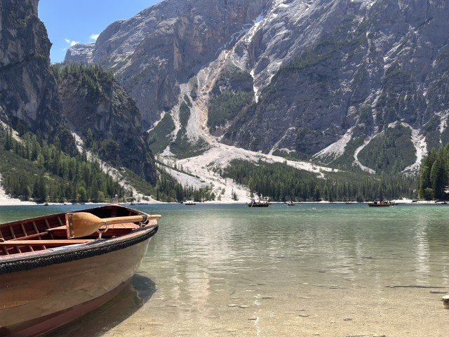
自然景觀 / 湖泊Nature / Lake6. 布萊埃斯湖 (Lago di Braies)6. Lago di Braies
號稱「多洛米蒂的珍珠」，也是全多洛米蒂最熱門的湖泊。翡翠綠的湖水倒映著 Seekofel 山峰，湖畔停泊的木造復古手搖船是必搭經典。強烈建議早上 8 點前抵達以避開洶湧人潮。手搖船通常要排隊，能選擇包船或共乘，時間約45min、並且會送每人明信片與紀念磁鐵各一。 Known as the 'Pearl of the Dolomites', it is the most popular lake in the region. The emerald green water reflects the Seekofel peak. The vintage wooden rowboats moored at the lake are a must-try. Highly recommend arriving before 8 AM to avoid crowds. Rowboats usually have queues; you can rent private or shared ones for ~45 mins, and they give each person a postcard and a souvenir magnet.
💭 我的感受：💭 Bryan's take: 人雖多，但藍綠色的漸層湖水與連綿的白岸、挺拔的針葉樹、與背景的雄偉山景都讓人彷彿置身畫中。 Despite the crowds, the gradient blue-green water, white shores, tall conifers, and majestic mountain backdrop make you feel like you're in a painting.
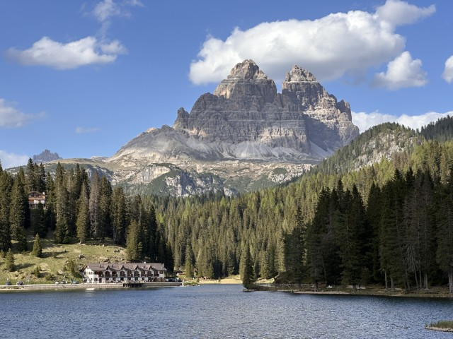
自然景觀 / 湖泊Nature / Lake7. 密蘇里納湖 (Lago di Misurina)7. Lago di Misurina
前往三尖峰（Tre Cime）必經的高山湖泊。湖畔有著標誌性的黃色外牆療養院建築，平靜的湖面倒映著索拉皮斯山（Sorapiss），如詩如畫。 A high-altitude lake en route to Tre Cime. The peaceful lake perfectly reflects Mount Sorapiss and the iconic yellow sanatorium building on its shore, absolutely picturesque.
💭 我的感受：💭 Bryan's take: 我會選這是全多洛米蒂最美的湖。視角從湖景往上一路延伸到拔高的山尖峰，襯著遠處的月，如同置身在加拿大的奇幻荒野中。 I would choose this as the most beautiful lake in the Dolomites. The view extends from the lake up to the towering peaks, backed by the distant moon, like being in the magical wilderness of Canada.
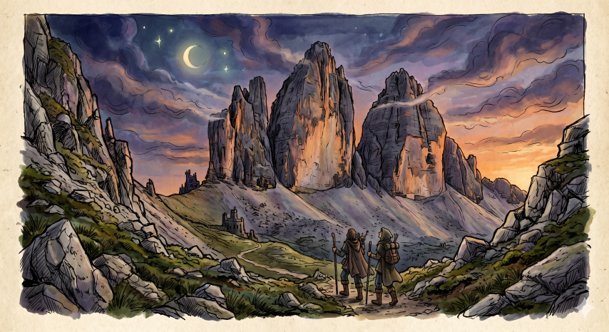
自然景觀Nature8. 三尖峰 (Tre Cime di Lavaredo)8. Tre Cime di Lavaredo
走三尖峰環線（Tre Cime di Lavaredo Loop）時必經的鞍部。從 Rifugio Auronzo 出發健行約 40 分鐘即可抵達，這裡是近距離欣賞三座巨石拔地而起最壯闊的角度。 A must-pass saddle on the Tre Cime Loop. About a 40-min hike from Rifugio Auronzo, it's the most magnificent angle to view the three massive rocky peaks up close.
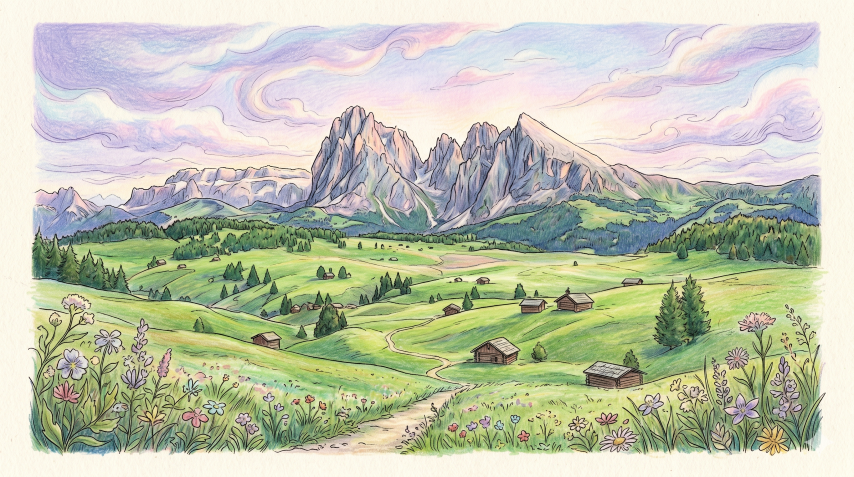
自然景觀 / 免費Nature / Free9. 休斯大草原 (Alpe di Siusi)9. Alpe di Siusi
歐洲面積最大的高海拔高山草甸。無邊無際的翠綠原野上散落著零星的傳統木屋，背景則是巍峨的 Sassolungo 施勒恩群峰。這裡不管是清晨的晨霧還是黃昏的日落，都美得不真實。 Europe's largest high-altitude Alpine meadow. Boundless green fields dotted with traditional wooden cabins, backed by the towering Sassolungo peaks. Whether in morning mist or evening sunset, its beauty is unreal.
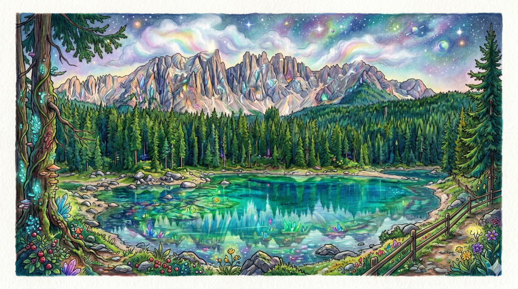
自然景觀 / 湖泊Nature / Lake10. 卡雷扎湖 (Lago di Carezza)10. Lago di Carezza
被譽為「彩虹之湖」。清澈透明的湖水依據光線呈現寶石藍、翡翠綠等漸層色彩，背後整齊排列的針葉林與鋸齒狀的 Latemar 山脈倒映在湖面上，極具神祕與奇幻色彩。 Known as the 'Rainbow Lake'. The crystal-clear water shows gradients of sapphire blue and emerald green depending on the light. The orderly coniferous forest and jagged Latemar mountains reflecting on the surface are mysterious and magical.
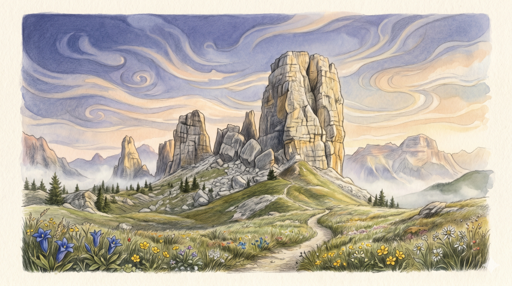
自然景觀Nature11. 五塔山 (Cinque Torri)11. Cinque Torri
位於東線的奇特岩石結構，由五座巨大的白雲石巨塔組成，外型神似中世紀的古堡廢墟。這裡同時也是一戰時期的露天博物館，保留了當年的戰壕與防禦工事。 Peculiar rock formations in the East, consisting of five massive dolomite towers resembling medieval castle ruins. It's also an open-air WWI museum with preserved trenches and fortifications.
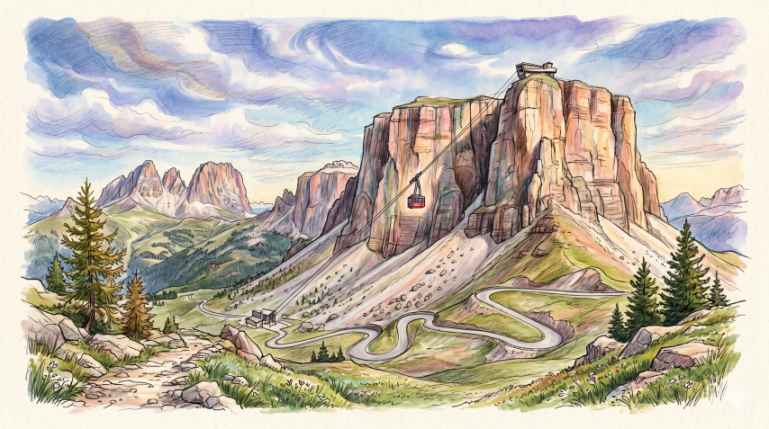
交通體驗 / 登高Transit / Viewpoint12. 薩斯普多伊 (Sass Pordoi)12. Sass Pordoi
被譽為「多洛米蒂的露台」。搭乘極速纜車可在數分鐘內直達海拔 2950 公尺的山頂平台，上方的景觀是一片寸草不生的荒涼岩石世界，彷彿登陸月球表面。 Hailed as the 'Terrace of the Dolomites'. A high-speed cable car takes you to the 2950m summit platform in minutes. The landscape above is a barren rocky world without a blade of grass, like landing on the moon.
🚆 交通攻略：不自駕也能玩多洛米蒂 🚆 Transport: Dolomites Without a Car
📍 從主要城市進入山區 (聯外交通) From Major Cities (External Transport)
西多洛米蒂West Dolomites 公車 350Bus 350
- 起點：Start:波札諾 (Bolzano) 火車站Bolzano Train Station
- 終點：End:奧蒂塞伊 (Ortisei Piazza S. Antonio)Ortisei Piazza S. Antonio
- 車程：Time:約 1 小時~1 hour
- 票價：Price:約 €7.5
東多洛米蒂East Dolomites Cortina Express
- 起點：Start:威尼斯 (Venice Mestre Central Train Station)Venice Mestre Train Station
- 終點：End:科爾蒂納 (Cortina d'Ampezzo Piazza Roma)Cortina d'Ampezzo Piazza Roma
- 車程：Time:約 2.5 小時~2.5 hours
- 票價：Price:約 €25
📍 山區內移動 (無自駕者必看) Moving Around the Mountains (No-Drive)
強大的巴士網Powerful Bus Network
在西多洛米蒂，Südtirolmobil 公車網覆蓋極廣，靠公車與纜車就能玩遍 80% 的著名景點（如 Seceda, 富內斯山谷）。 In the West Dolomites, the Südtirolmobil bus network is extensive. You can cover 80% of top spots (like Seceda, Val di Funes) just by bus and cable car.
善用免費交通卡Use Free Transit Cards
只要入住 Val Gardena 谷地的正規旅館，幾乎都會免費贈送當地交通卡（Südtirol Guest Pass），期間搭乘公車幾乎全部免費！ Most accommodations in Val Gardena offer a free local transit card (Südtirol Guest Pass), allowing almost entirely free bus rides during your stay!
淡季會沒車搭Off-Season Bus Cuts
公車班次會隨旺季與淡季大幅縮減，特別是東多洛米蒂與高山路線。若打算在 10月中之後到6月初前往，強烈建議一定要租車自駕，否則寸步難行。
Bus frequencies drop drastically outside peak season, especially in the East and high routes. From mid-Oct to early June, driving is highly recommended or you'll be stranded.
👉 查詢淡季公車時刻👉 Check off-season schedules
💳 到底該買哪張交通 / 纜車通票？ Which Transport / Cable Car Pass to Buy?
多洛米蒂的纜車極貴，通票種類又多得眼花撩亂。我整理了三大通票的特色，幫你一秒判定哪張最適合你： Cable cars in the Dolomites are very expensive, and passes are confusing. Here are the 3 main passes to help you decide instantly:
Dolomiti Supersummer
最廣泛的多洛米蒂全區纜車票Widest Coverage Cable Car Pass✅ 適合誰：✅ Best for: 「瘋狂纜車族」，每天跨越不同山谷，把纜車當計程車搭的人。 "Crazy cable car riders", crossing different valleys daily, treating cable cars like taxis.
涵蓋範圍：Coverage: 多洛米蒂全區 120 多部纜車 (12 個山谷)。 Over 120 cable cars across the entire Dolomites (12 valleys).
致命缺點：Main Drawback: 不包含 Seceda 的三段纜車Does NOT include Seceda's 3 cable cars (Ortisei–Furnes, Furnes–Seceda, Fermeda).
2026 有效期：2026 Validity: 5/14 – 11/8 (可選 1/3/7 日券或季票Options for 1/3/7 days or season).
Gardena Card
Val Gardena 谷地專屬纜車神卡Val Gardena Ultimate Pass✅ 適合誰：✅ Best for: 「西線深度玩家」，住在 Ortisei 周邊，主攻 Seceda 等西線大景的人。 "West route deep explorers", staying near Ortisei, focusing on Seceda and western spots.
涵蓋範圍：Coverage: 專為 Val Gardena 區域設計的 18 條纜車，18 cable cars in Val Gardena, 包含 Seceda！INCLUDES Seceda!
2026 有效期：2026 Validity: 約 5 月底至 10 月初 (可選連續 3 日或 6 日不限次數搭乘)。 Late May to early Oct (3 or 6 consecutive days unlimited).
Südtirol Guest Pass
南提洛省大眾運輸通票South Tyrol Transit Pass✅ 適合誰：✅ Best for: 不自駕、依賴公車火車，偶爾搭幾次纜車的背包客。 Backpackers relying on buses/trains, occasionally taking a cable car.
涵蓋範圍：Coverage: 南提洛省所有巴士、火車與 5 個特定纜車 (如 Ritten)。 All buses, trains in South Tyrol + 5 specific cable cars (e.g., Ritten).
致命缺點：Main Drawback: 不包含 Seceda 纜車與東多洛米蒂的部分巴士。Does NOT include Seceda and some East Dolomites buses.
取得方式：How to get: 入住合作旅館即「免費贈送」，或自行購買 1/3/7 日連續券。 "Free" via partner hotels, or buy 1/3/7 day passes.
🚐 懶人玩法：免自駕多洛米蒂一日團 Lazy Way: No-Drive Day Tours
不想研究複雜的山區公車時刻表？或是時間緊湊，只能從周邊大城市快閃？參加專車接送的一日團是最省心、且保證能收集到經典大景的選擇。 Don't want to study complex bus schedules? Or short on time doing a quick trip from a big city? A guided day tour with private transfer is the most worry-free way to guarantee seeing classic views.
東多洛米蒂：科爾蒂納與雙湖 East Dolomites: Cortina & Lakes
東多洛米蒂：科爾蒂納與雙湖 East Dolomites: Cortina & Lakes
東多洛米蒂：三湖一日遊 East Dolomites: 3 Lakes Tour
🎶 獨特體驗：多洛米蒂的聲音 (I Suoni delle Dolomiti) 🎶 Unique Exp: Sounds of the Dolomites
全球最迷人的高海拔音樂節 The Most Charming High-Altitude Festival
有別於都市的喧囂慶典，多洛米蒂山區在每年夏末秋初（約 8 月底至 10 月初），會舉辦極具詩意的「多洛米蒂之聲音樂節」。 Unlike noisy city festivals, the Dolomites host the poetic "Sounds of the Dolomites" music festival every year from late August to early October.
這是一場完全融入自然的盛宴。來自世界各地的音樂家、大提琴手、爵士樂團會親自揹著樂器，與徒步者一起健行抵達海拔兩三千公尺的草坡或高山湖畔。以白雲岩巨峰為天然的音箱反射板，在沒有任何電子擴音設備的情況下，為席地而坐的聽眾進行完全原聲的演奏。 It's a feast completely integrated with nature. Musicians worldwide hike up to alpine meadows or lakes at 2000-3000m carrying their own instruments. Using the massive dolomite peaks as natural acoustic reflectors, they perform completely unplugged acoustic sets for audiences sitting on the grass.
- 大部分高山音樂會皆為免費參加，只需自己帶著野餐墊與食物提早抵達。 Most alpine concerts are free to attend. Just bring a picnic mat and food, and arrive early.
- 有些日出音樂會（Dawn concerts）在清晨 6 點開始，需要戴頭燈摸黑上山，是非常難忘的獨旅回憶！ Some Dawn concerts start at 6 AM, requiring a headlamp hike in the dark. An unforgettable solo travel memory!
🛏️ 住宿建議：精選安全且高性價比的獨旅避風港 🛏️ Accommodation: Safe & High-Value Solo Stays
在山區獨旅，最推薦以西線的奧蒂塞伊 (Ortisei) 或東線的科爾蒂納 (Cortina d'Ampezzo) 周遭為住宿基地，不僅免自駕交通方便，機能也最好。但若想省錢，西線也可以住波札諾，到奧蒂塞伊只要約 1hr。以下依區域整理 6 間 CP值高的住宿： For solo trips, basing yourself in Ortisei (West) or Cortina d'Ampezzo (East) is highly recommended for easy transit and amenities. To save money, staying in Bolzano is great (1hr to Ortisei). Here are 6 high-value stays:
| 🏨 住宿名稱🏨 Name | 💰 價格感受💰 Price | ⭐ 評分 / 口碑⭐ Rating | 📍 區域位置📍 Location | 💡 我為何推薦💡 Why Recommend | 🔗 查價與訂房🔗 Booking |
|---|---|---|---|---|---|
| Ferrari Tower 公寓式飯店Aparthotel 📍 Google Maps | €70–€150/晚，單人房約€70，公寓約€120，市內 CP 值極高。 €70–€150/night. Single ~€70. Extremely high value in the city. | Tripadvisor 4.0/5，Booking 8.0+，空間大、乾淨、有廚房。 Booking 8.0+. Spacious, clean, has a kitchen. | 西線 波札諾 (Bolzano) 市南側，距市中心 1.3km West: Bolzano south, 1.3km from center. | 有廚房可自煮！適合長住獨旅者；靠近火車站，可搭公車到 Ortisei（約 1 小時）。 Kitchen included! Great for long stays. Near the station, 1hr bus to Ortisei. | |
| B&B Hotel Bolzano 連鎖經濟飯店Budget Chain 📍 Google Maps | €55–€90/晚，連鎖經濟飯店中價格合理。 €55–€90/night. Very reasonable for a chain hotel. | 8.8/10（5,000+ 評價），極高評價，極致乾淨。 8.8/10 (5,000+ reviews). Extremely clean. | 西線 波札諾 (Bolzano) 市南側，距市中心 10 分鐘車程 West: Bolzano south, 10 mins from center. | 評價極高的連鎖飯店，免費 Wi-Fi 和停車；可搭公車到 Ortisei；CP 值高，適合預算獨旅者。 Highly rated chain. Free Wi-Fi/parking. Bus to Ortisei available. High value for budget solo travelers. | |
| Hotel Panoramik 3 星家庭經營飯店3-Star Family Hotel 📍 Google Maps | €60–€100/晚，有空調、SPA 和泳池。 €60–€100/night. Has A/C, SPA, and pool. | 約 8.0–8.5/10，家庭經營，服務親切。 ~ 8.0–8.5/10. Family run, friendly service. | 西線 Mühlbach，距纜車站 300m West: Mühlbach, 300m to cable car. | 有 SPA（泳池、桑拿）、早餐自助餐；位置在谷地，可搭公車到 Val Gardena，CP 值高。 SPA (pool, sauna), buffet breakfast. Good base to bus into Val Gardena. Great value. | |
| Hotel Fiames 經濟型飯店Budget Hotel 📍 Google Maps | €86–€232/晚（平均€118），比 Cortina 平均便宜很多！ €86–€232/night (Avg €118). Way cheaper than Cortina average! | 約 7.5–8.0/10，被稱為「Cortina 的寶石」。 ~ 7.5–8.0/10. Known as the "Gem of Cortina". | 東線 科爾蒂納 (Cortina) 郊區 East: Cortina outskirts. | 在 Cortina 地區 CP 值極高的經濟飯店，平均房價比當地平均便宜 2/3，適合預算有限的獨旅者。 Extremely high value budget hotel in the Cortina area (2/3 cheaper than average). Perfect for budget solos. | |
| Hotel Rose 3 星滑雪飯店3-Star Ski Hotel 📍 Google Maps | €70–€120/晚，含免費早餐、Wi-Fi 和停車。 €70–€120/night. Free breakfast, Wi-Fi, parking. | 約 8.0–8.5/10，滑雪友好，服務親切。 ~ 8.0–8.5/10. Ski friendly, kind service. | 東線 Villabassa，距三尖峰 10 分鐘車程 East: Villabassa, 10 min drive to Tre Cime. | 滑雪友好飯店，有滑雪行李存放、免費早餐；位置靠近 Dolomitas 活動區，去三尖峰方便。 Ski friendly, has ski storage, free breakfast. Close to activities and easy access to Tre Cime. | |
| Hotel Croda Rossa 3 星飯店3-Star Hotel 📍 Google Maps | €60–€100/晚，有餐廳、免費 Wi-Fi 和停車。 €60–€100/night. Has restaurant, free Wi-Fi & parking. | 約 7.5–8.0/10，位置靠近三尖峰與 Misurina 湖。 ~ 7.5–8.0/10. Close to Tre Cime & Lake Misurina. | 東線 Dobbiaco，距 Misurina 湖近 East: Dobbiaco, close to Lake Misurina. | 靠近三尖峰與 Misurina 湖，有餐廳；去東多洛米蒂景點方便，CP 值高。 Close to East Dolomites attractions with its own restaurant. Great CP value. |
註：山區住宿在夏冬旺季極度搶手，請務必提早至少 3–6 個月規劃。 Note: Mountain stays are extremely popular in peak seasons. Plan 3-6 months ahead!
🍝 山區美食指南：必吃提洛爾特色與高山屋餐廳 🍝 Alpine Cuisine: Tyrolean Specialties & Hut Dining
🍽️ 揉合奧地利與義大利的 3 大經典美食 3 Classic Foods Blending Austria & Italy
多洛米蒂所屬的南提洛邦（South Tyrol）曾是奧匈帝國領土，因此這裡的美食與義大利其他地方截然不同，更偏向高熱量的德奧系高山料理： South Tyrol, where the Dolomites are located, was once part of the Austro-Hungarian Empire. The cuisine here is distinct from the rest of Italy, leaning towards high-calorie Austro-German alpine dishes:
南提洛斑點生火腿 (Speck)Speck Alto Adige
特色：Features: 不同於帕瑪生火腿，Speck 經過特殊的冷煙燻處理，帶有濃郁迷人的松木香氣，是南提洛最引以為傲的招牌。 Unlike Parma ham, Speck is cold-smoked, giving it a rich pine aroma. It's the proud signature of South Tyrol.
搭配黑麥麵包與在地起司作為高山健行後的冷盤，或切碎做成經典的煙燻火腿麵包丸子。 With rye bread and local cheese as a cold cut after hiking, or diced in traditional Knödel (dumplings).
麵包丸子 (Canederli / Knödel)Bread Dumplings (Knödel)
特色：Features: 將隔夜麵包、牛奶、雞蛋混入起司、菠菜或 Speck 火腿捏成的大丸子，是整個多洛米蒂山區歷史最悠久、最常見的高山主食。 Large dumplings made of stale bread, milk, and eggs, mixed with cheese, spinach, or Speck. The most historic and common alpine staple.
泡在熱騰騰的牛高湯中一同食用最靈魂。常見口味有：傳統起司、Speck 火腿與菠菜。 Best served floating in hot beef broth. Common flavors: Cheese, Speck, and Spinach.
阿爾卑斯蘋果派 (Apfelstrudel)Apple Strudel (Apfelstrudel)
特色：Features: 受奧地利文化影響極深的殿堂級甜點。香酥的薄餅皮裡包裹著帶有微弱肉桂香氣的熱蘋果塊與松子。 A legendary dessert heavily influenced by Austrian culture. Crispy thin pastry wrapping hot, cinnamon-spiced apple chunks and pine nuts.
在高山屋點這道，千萬要豪邁地加點一球香草冰淇淋，或直接淋上熱騰騰的香草醬！ When ordering in a hut, generously add a scoop of vanilla ice cream or hot vanilla sauce!
🎒 獨旅實戰：低預算與友善餐廳清單 Solo Guide: Budget & Friendly Eats
在多洛米蒂獨旅，除了健行步道底端的著名山屋，山谷小鎮裡也有許多極具地方特色且對單人用餐非常包容的好店。以下精選平價、高性價比店家： Besides famous mountain huts on trails, the valley towns have many local, solo-friendly spots. Here are selected high-value eateries:
| 🍴 餐廳 / 小吃🍴 Restaurant/Snack | 💰 價格水平💰 Price Level | 📍 交通位置📍 Location | 💡 我為何推薦💡 Why Recommend |
|---|---|---|---|
| 🌳 在地農家菜🌳 Farm-to-Table Pedrutscherhof 📍 在地圖開啟Open in Maps |
中等價位Mid-Range 自家製農家宴Homemade Feast |
富內斯山谷 (Val di Funes)Val di Funes
接近聖瑪格達萊娜小鎮Near Santa Maddalena
|
🛡️ 獨旅友善：高Solo Friendly: High
有適合單人的溫馨桌位。Cozy tables for one.
典型的提洛爾傳統農場經營餐廳（Buschenschank）。食材均為自家農場新鮮採集與製作，推薦點他們的家常醃製冷盤與手工義大利餃，能夠在極具阿爾卑斯鄉村風的木質溫馨裝潢中，無拘無束地用餐。 A typical traditional Tyrolean farm restaurant (Buschenschank). Ingredients are freshly harvested/made on the farm. Recommend the cold cuts and handmade ravioli in a cozy Alpine wooden setting. |
| Kronestube 傳統客棧酒館餐廳Trad. Tavern Restaurant 📍 在地圖開啟Open in Maps |
低到中價位Low-Mid 超值家常套餐High-value Set |
奧蒂塞伊小鎮 (Ortisei)Ortisei town
由火車站搭乘巴士進鎮後可達Accessible by bus
|
🛡️ 獨旅友善：極高Solo Friendly: Very High
吧台客座自由，單人無壓力。Bar seating is perfect for solos.
這是 Ortisei 鎮上少數可以平價、快速解決一餐的傳統提洛爾小餐館（Stube）。常備有鹿肉燉麵、脆皮豬腳等。因為出餐快速且座位流動率高，非常適合剛健行下山、不想在高級餐廳正襟危坐的背包獨旅者。 One of the few places in Ortisei for an affordable, quick traditional Tyrolean meal (Stube). Venison stew, crispy pork knuckles. High turnover and fast service, perfect for backpackers coming down the mountain. |
| ⛰️ 世紀歷史古農場Centuries-old Farm Maso Alfarëi Hof 📍 在地圖開啟Open in Maps |
中等價位Mid-Range 手工提洛爾料理Handmade Tyrolean |
San Martino in Badia
靠近山口與滑雪渡假大區Near pass & ski resort
|
🛡️ 獨旅友善：高Solo Friendly: High
老闆娘親切，像回鄉下外婆家。Friendly owner, feels like grandma's home.
擁有數百年歷史的老靈魂木造建築農場餐廳。最推薦他們的「南 squash 或是菠菜 Canederli 麵包丸子」，以及當季的蘋果派。這裡散發出極度強烈、未經商業污染的拉定民族（Ladin）古老文化風情，是尋求文化深度的必踩點。 A historic wooden farm restaurant. Highly recommend their squash or spinach Canederli, and seasonal apple pie. Exudes strong, uncommercialized ancient Ladin culture. A must-visit for cultural depth. |
| Ütia de Pecol 高山山口滑雪小屋Alpine Ski Hut 📍 在地圖開啟Open in Maps |
中等價位Mid-Range 高海拔白雲石餐廳High-Altitude Hut |
靠近 Passo Pordoi 山口Near Passo Pordoi
由阿爾卑斯高山路網可達Accessible via Alpine routes
|
🛡️ 獨旅友善：中高Solo Friendly: Mid-High
滑雪/健行季人潮洶湧，拼桌自然。Crowded in seasons, sharing tables is natural.
「Ütia」在當地拉定語中意指山中小屋。這裡提供熱騰騰的玉米糕（Polenta）佐野生菇類、香煎高山乳酪、以及口感紮實的 Speck 生火腿意麵。在高海拔寒風後，躲進這家傳統暖氣木屋，喝上一碗厚實的義式濃湯，是極致的享受。 "Ütia" means mountain hut in Ladin. Serves hot Polenta with wild mushrooms, pan-fried alpine cheese, and Speck pasta. Seeking refuge in this heated wooden hut with thick Italian soup after the cold high-altitude wind is the ultimate enjoyment. |
| 🤠 德式肉食控Meat Lovers Eirisch Grill 📍 在地圖開啟Open in Maps |
低到中價位Low-Mid 大份量肉食首選Large Portions |
Brunico (Bruneck) 核心區Core
前往布萊埃斯湖的北線巴士轉運重鎮Bus hub to Lago di Braies
|
🛡️ 獨旅友善：極高Solo Friendly: Very High
提供快速外帶及乾淨俐落的快餐座位。Fast takeout & clean seating.
位於北部谷地樞紐市中心，是肉食控獨旅者的隱藏天堂。這裡販售極高水準的現烤多汁漢堡、炭烤肋排與香脆的奧地利式炸豬排（Schnitzel）。如果你對連續幾天精緻優雅的義式燉飯有些厭倦，想用大份量的美德式燒烤與冰涼的生啤酒犒賞自己，選這家絕對沒錯。 A hidden paradise for meat lovers in the northern hub. High-quality juicy burgers, grilled ribs, and crispy Austrian Schnitzels. Perfect to reward yourself with large portions of BBQ and cold beer if you are tired of fine Italian risotto. |
🚐 基地延伸：山區外圍必訪的特色小鎮 🚐 Nearby Hubs: Must-Visit Peripheral Towns
📍 3 大必訪周邊門戶城市 3 Must-Visit Gateway Towns
在前往多洛米蒂的途中，或是遇到山區下雨需要雨天備案時，這幾個位在山區邊緣的絕美城鎮非常值得你順道停留： On your way to the Dolomites, or if you need a rainy-day backup plan, these beautiful towns on the edge of the mountains are well worth a visit:
Bolzano (Bozen)
波札諾Bolzano南提洛邦的首府與鐵路總樞紐，完美融合了義大利的慵懶熱情與德意志的嚴謹秩序。老城區內充滿德式鄉村拱廊與露天咖啡座，這裡除了有必訪的考古博物館（能一睹 5300 年冰人奧茲）之外，更是預算有限的獨旅者極佳的省錢住宿基地，可搭乘火車或 SAD 巴士無縫前往各大谷地。 The capital and main rail hub of South Tyrol, perfectly blending Italian passion and German order. The old town is full of German-style arcades. Aside from the must-visit Archaeology Museum (home to the 5300-year-old Iceman Ötzi), it's an excellent budget base for solo travelers, offering seamless train/bus connections to all valleys.
Ortisei (St. Ulrich)
奧蒂塞伊Ortisei加迪納谷地 (Val Gardena) 最發達的核心門戶。小鎮以傳承數百年的精緻木雕工藝聞名，四周環繞著明信片般的彩色木屋。最棒的是，前往 Seceda 刀鋒山與 Alpe di Siusi 休斯大草原的兩大熱門纜車起點都在鎮上，生活機能與機能近乎完美，是不自駕獨旅者的白雲石山脈首選基地。 The most developed gateway to Val Gardena. Famous for centuries-old woodcarving crafts and surrounded by postcard-perfect colored wooden houses. Best of all, the two popular cable cars to Seceda and Alpe di Siusi start right in town. Its amenities make it the top base for solo travelers without a car.
Cortina d'Ampezzo
科爾蒂納丹佩佐Cortina d'Ampezzo東多洛米蒂的歷史核心大城，更是 2026 年冬季奧運的主辦聖地。城鎮被阿爾卑斯群峰 360 度環繞，主街林立著高檔木造精品店與米其林質感餐廳。對獨旅背包客而言，這裡是探索東線大景點（如三尖峰、密蘇里納湖與布萊埃斯湖）唯一的公車轉運重鎮，能從威尼斯搭直達車一班抵達。 The historic core of the East Dolomites and host of the 2026 Winter Olympics. Surrounded 360 degrees by Alpine peaks, the main street is lined with high-end wooden boutiques and Michelin restaurants. For solo backpackers, it's the only major bus hub to explore eastern spots (Tre Cime, Misurina, Braies), directly reachable from Venice.
🇮🇹 義大利獨旅生存避雷箱 Italy Survival Box
交通：營運分散與城鄉差異Transit: Fragmented Ops
義大利的大眾運輸非常「在地化」。除了主要大城市間有國鐵與私鐵銜接外，南北部與山區城鄉之間的交通，通常由各自獨立的地區巴士公司營運，班次邏輯與準點率差異極大。 Italian transit is highly "localized". Besides national and private trains connecting major cities, transit in mountains and rural areas is run by independent regional bus companies. Punctuality varies wildly.
自駕：山城 ZTL 交通管制Driving: ZTL Zones
這是自駕者的夢魘！幾乎所有義大利歷史古鎮（包含 Ortisei 等度假小鎮中心）都設有 ZTL (交通限制區)。若未經許可誤闖，會被無處不在的監視器拍下，回國後將收到天價罰單。 A driver's nightmare! Almost all Italian historic towns (including Ortisei center) have ZTL (Limited Traffic Zones). Entering without a permit triggers cameras, resulting in astronomical fines sent back home.
票務：打票與 App 啟用機制Tickets: Validate & Activate
義大利的區域火車票與公車票「不一定是買了就能直接用」。紙本票上車前必須在月台打票機打上時間；若是使用 App 購買的電子票，上車前必須手動點擊「Check-in / 啟用」。 Regional train and bus tickets "aren't always valid just by buying them". Paper tickets must be time-stamped in platform machines. E-tickets on apps must be manually "Checked-in / Activated" before boarding.

Bryan | Europe Solo Guide
「獨旅不是孤單，而是給自己一場完整的自由。」 "Solo travel is not about being lonely; it's about giving yourself complete freedom."
熱愛穿梭在歐洲老城區的石板路上與壯麗群山間。目前已獨自走訪 41 個歐洲國家，致力於將複雜的交通、住宿與隱藏景點，轉化為有溫度的獨旅攻略。希望這篇文章能幫你省下找資料的時間，把精力留給旅途中的美好。 I love wandering through cobblestone alleys of European old towns and majestic mountains. Having visited 41 European countries solo, I aim to transform complex transit, lodging, and hidden gems into warm solo guides. I hope this article saves you time so you can spend your energy on the beauty of the journey.